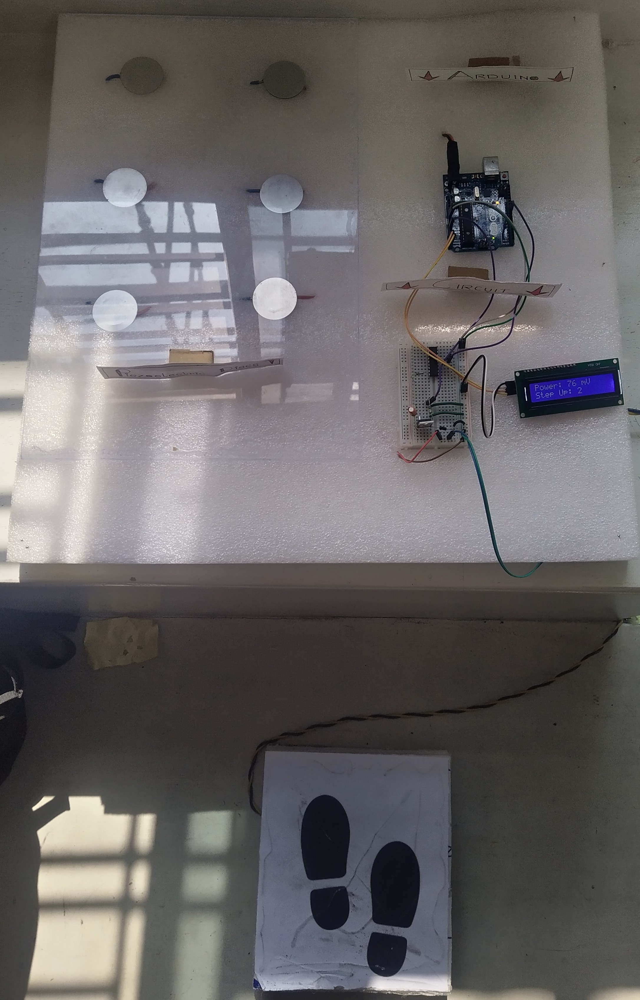
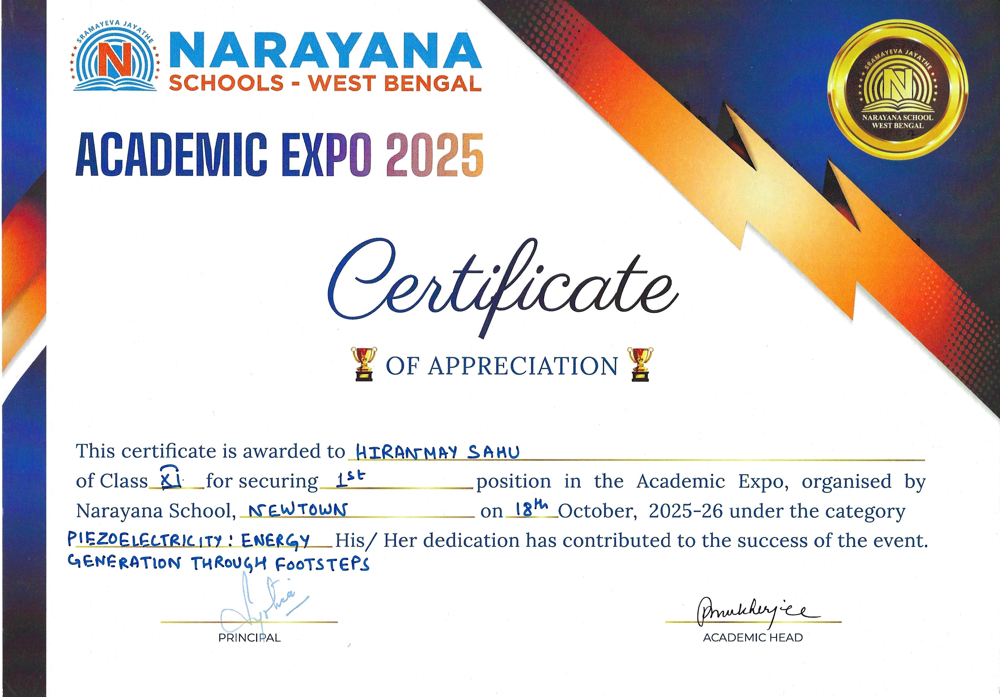
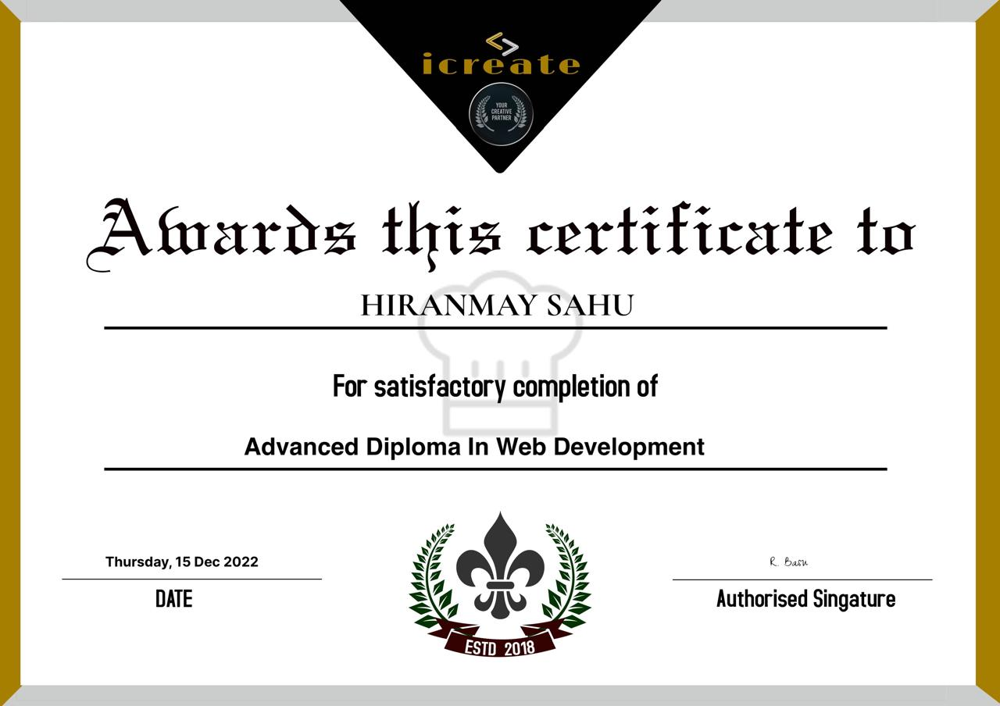
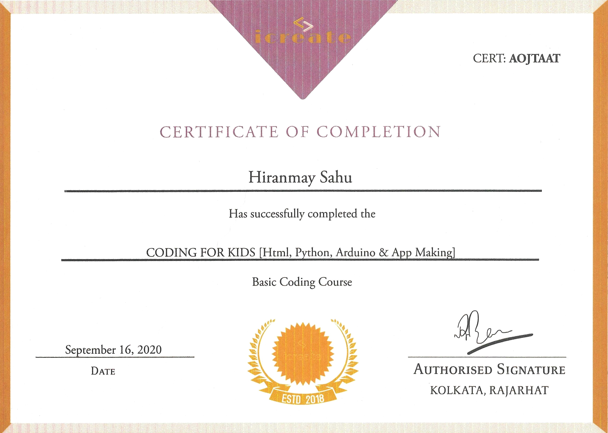
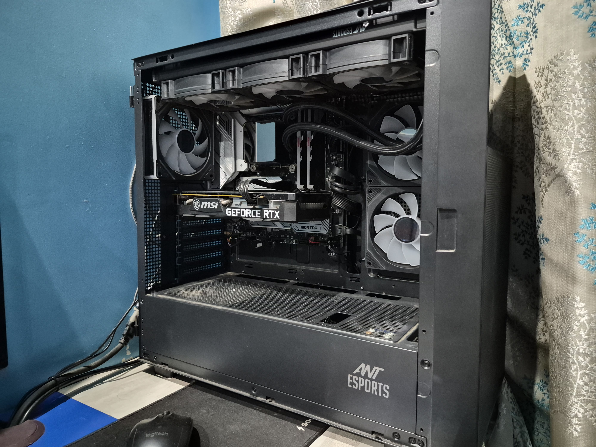
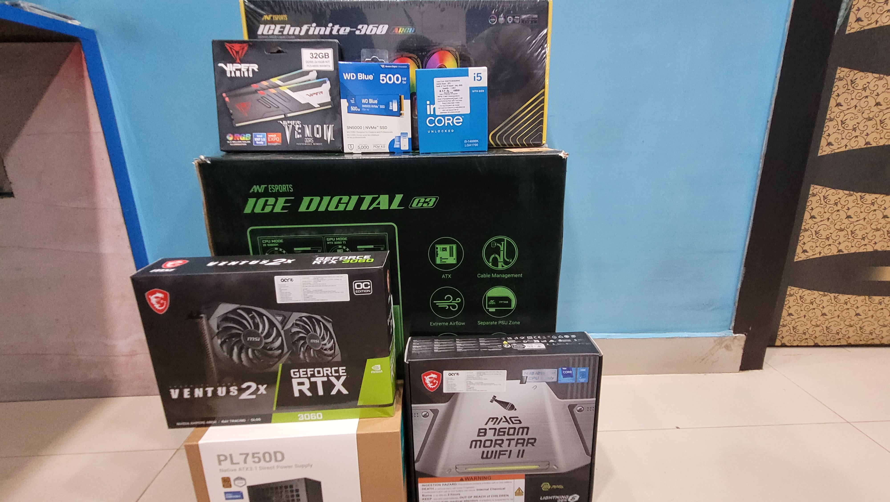
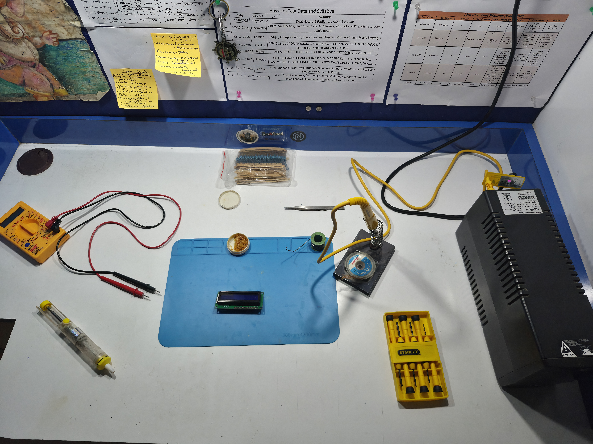
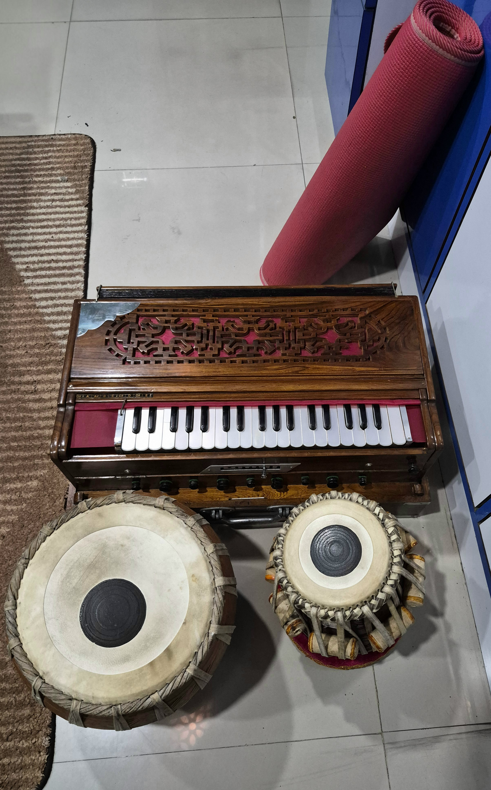

I believe that learning goes beyond textbooks and classroom lessons. I enjoy exploring technology, learning new skills and trying to understand how different things work. Over the years, I have taken part in academic activities and worked on personal projects that have helped me develop my technical knowledge, creativity and problem-solving abilities.
-The Build: I conceptualized, engineered, and led the development of a functional hardware prototype that captures mechanical energy from human footsteps and converts it into usable electricity.
-The Tech: Arduino UNO, custom C++ coding, Breadboard , Piezoelectric Discs, MOSFETs, Rectifier Diodes, and ICs.
-The Problem: The Arduino was picking up noise and the MOSFET, being a capacitor, was holding charge in it transmitting a constant inaccurate reading to the Arduino. To solve it I had to manually tweak the code to deal with the reading.

Due to my unique and innovative approach and consideration towards sustainable development(the theme of the expo), I secured the first position in the Narayana School- Newtown Academic Expo 2025.

My interest in programming began at an early age. In Class 8, I completed technical training that introduced me to several programming languages, web development tools and technologies.
During this learning experience, I explored:
- Programming: Python and JavaScript (ES6)
- Web Development: HTML, CSS, ReactJS and Next.js
- Frontend Tools: Bootstrap and Tailwind CSS
- Backend Development: Django and MongoDB
- Additional Learning: Website deployment and an introduction to chatbot development
This training helped me understand how websites and software applications are developed. It also encouraged me to continue learning independently and improve my coding skills.

Earning this certification solidified my understanding of computational logic and structural programming. By mastering fundamental coding concepts, I developed the algorithmic thinking necessary to write efficient scripts for microcontrollers and bridge the gap between software instructions and physical hardware execution.

Another practical learning experience was assembling my own personal computer. I independently worked through the process of selecting and assembling the components, making the necessary connections and setting up the system.
Seeing the computer boot successfully on my first attempt was a rewarding experience. It helped me develop a better understanding of computer hardware, component compatibility and how different parts work together to form a complete system.
This experience also strengthened my interest in the hardware behind modern computing technology.

Carefully researching and selecting each component was a critical phase of the build. I evaluated GPU requirement, CPU-Chipset compatibility, thermal constraints and power delivery to ensure optimal system performance without bottlenecks. This deep dive into hardware specifications gave me a highly practical understanding of computer architecture, component integration and system efficiency. Not to mention the satisfaction of building something from the ground up before the memory shortage!

This is my dedicated makeshift workstation/study table where theoretical knowledge meets practical application. Equipped with a multimeter, soldering station and breadboard, this is where I prototype Arduino circuits, test semiconductor components like MOSFETs and diodes, and many other components. Having this dedicated space allows me to continuously experiment with electronics and repair household appliances.

This is how I give myself some peace, through music and yoga. I am an Indian classical singer for 7 years now and a yoga practicer for 1.5 year. Doing so, gives me a huge amount of stress relief and calmness, which in-turn keeps my health food and mind calm.
